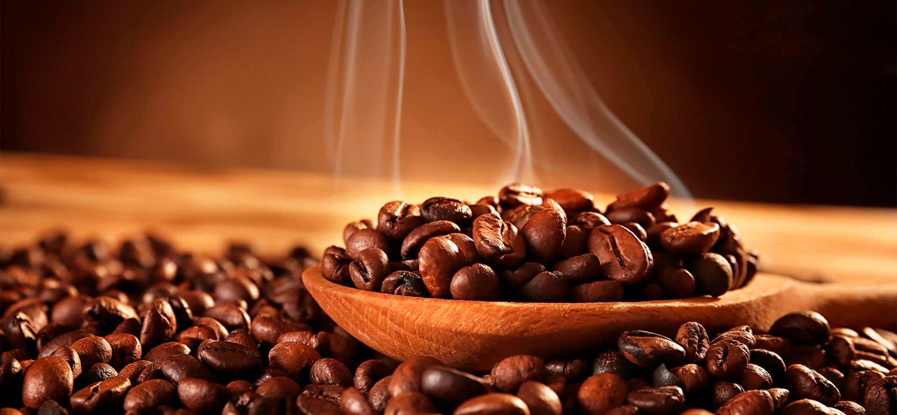
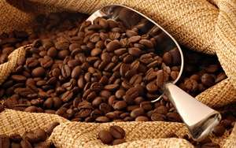
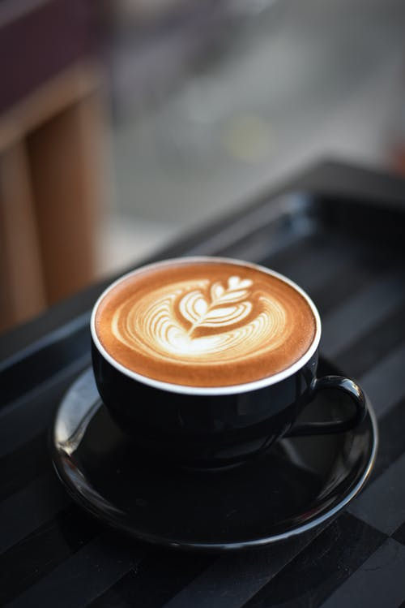
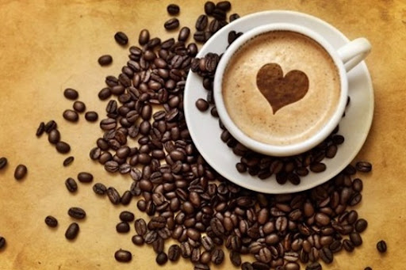
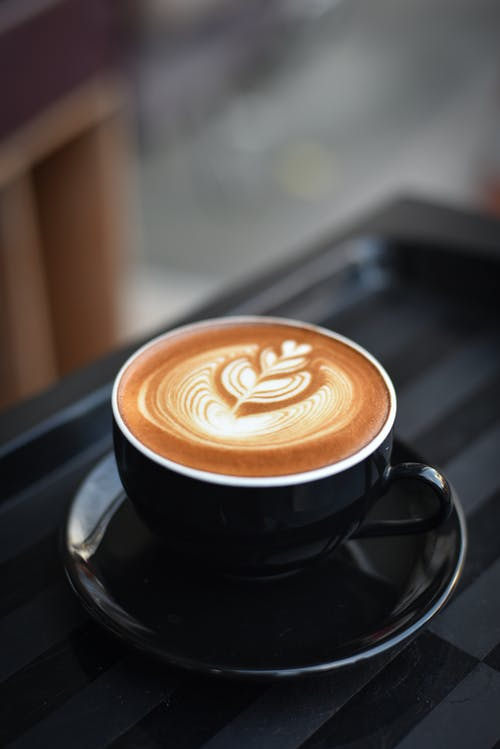
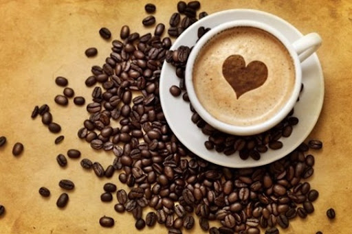

LATTE
COFFEE
Caffè latte, often shortened to just latte in English, is a coffee drink of Italian origin made with espresso and steamed milk.

CAPPUCCINO
A cappuccino is an espresso-based coffee drink and is prepared with steamed milk foam.

ESPRESSO
Espresso coffee can be made with a wide variety of coffee beans and roast degrees
COFFEE BEANS
ARABICA COFFEE BEANS

Coffea arabica, also known as the Arabian coffee, is a species of flowering plant in the coffee and madder family Rubiaceae. It is believed to be the first species of coffee to have been cultivated, and is currently the dominant cultivar, representing about 60% of global production.
ROBUSTA COFFEE BEANS
Coffea canephora is a species of coffee that has its origins in central and western sub-Saharan Africa. It is a species of flowering plant in the family Rubiaceae. Though widely known as Coffea robusta, the plant is scientifically identified as Coffea canephora, which has two varieties, robusta.
LIBERICA COFFEE BEANS
Coffea liberica, commonly known as the Liberian coffee, is a species of flowering plant in the family Rubiaceae from which coffee is produced.Originating from Liberia in West Africa, the Liberica plant produces larger. It’s said to have a floral and fruity aroma.
 


